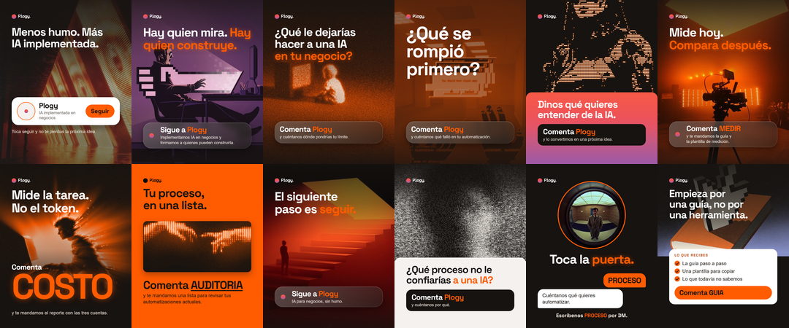
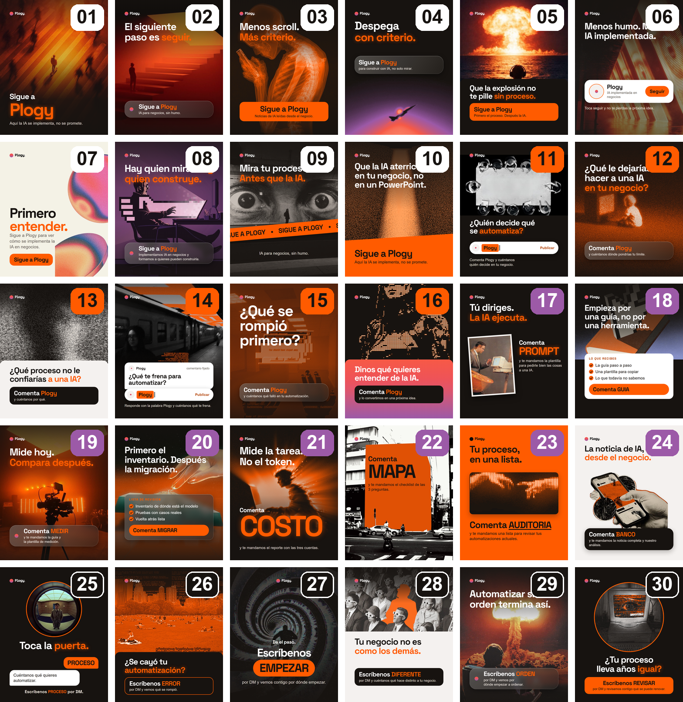
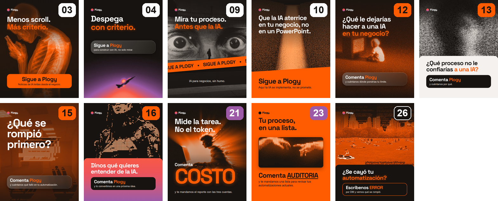
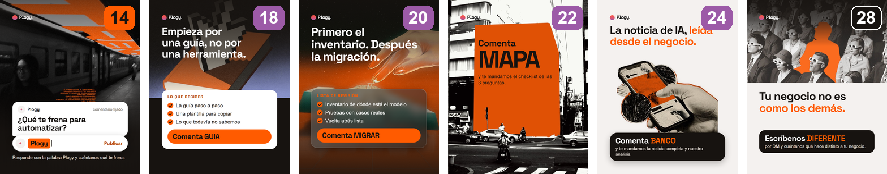
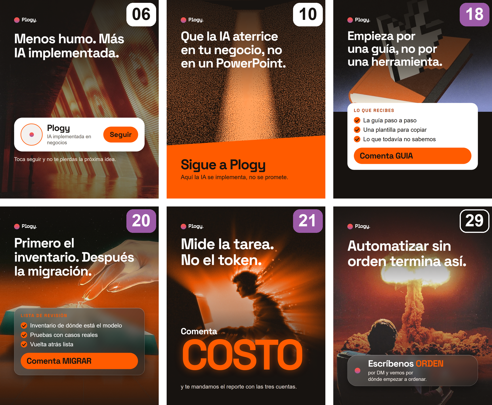
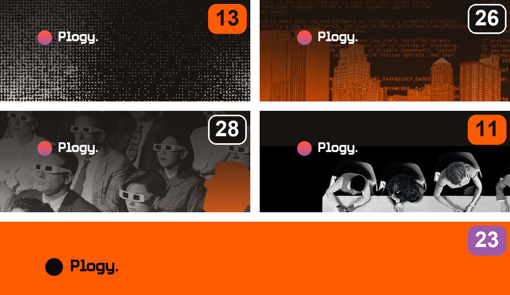

01/07

Building Plogy
Armamos 30 formas de cerrar un carrusel.
14 hubo que corregirlas. Esto fue lo que falló.

Building Plogy
14 hubo que corregirlas. Esto fue lo que falló.


Ninguna se ha publicado ni medido.
Lección 1
17 de las 30 fotos pasaron por un tratamiento de color.
11 con mapa a la paleta (azul, verde, amarillo)

6 con los rojos llevados al naranja

Lección 2
En 6 variantes el titular pasó a blanco.

Solo guardamos el después, no el antes.
Lección 3
5 correcciones: sombra arriba en 13, 26 y 28, foto más abajo en 11 y logo negro sobre naranja en 23.

Lección 4
De 8, solo 3 tienen algo detrás, y ninguno está publicado.

Comenta Plogy y dinos el número. Ninguna se ha publicado ni medido todavía.